How to Recognize It
The double-layer jaws, plastic rear-jaw pivot nuts, and three slip-on rubber boot feet on the legs identify a Type 4.
See the gallery of detail photos below. The Workmate 79-001 Type Study spreadsheet shows how all ten Types compare.
Black & Decker Workmate 79-001 Type 4
While many other Types were made with occasional changes in components, the Type 4 is the only Workmate 79-001 where the H-frames varied. You can see the difference in my Type 4's above, made four months apart. The cast aluminum H-frame (above left) was used on the Type 4 for the first part of its production run, with the jaws made either of veneered MDF (first used on some Type 2's) or of plywood. In December 1977, production of the Type 4 changed to the stamped steel H-frame with plywood jaws.
Because the later Type 2's used various components that then became standard on the Type 4, it's easy to confuse these two when the H-frame is aluminum.
The Type 4 is the second-most common Type of the 79-001.
Notable Characteristics
With the Type 3 being a short-term supplemental import from Ireland, the Type 4 was the actual successor to the Type 2 from the Brockville, Ontario factory, so the Type 2 is what I compare it to below. The changes made during the run of the Type 2 became standard on the Type 4. These include:
Component Changes
All dates given below are approximate.
Because the later Type 2's used various components that then became standard on the Type 4, it's easy to confuse these two when the H-frame is aluminum.
The Type 4 is the second-most common Type of the 79-001.
Notable Characteristics
With the Type 3 being a short-term supplemental import from Ireland, the Type 4 was the actual successor to the Type 2 from the Brockville, Ontario factory, so the Type 2 is what I compare it to below. The changes made during the run of the Type 2 became standard on the Type 4. These include:
- The 3-rib step
- The hollow plastic vise handles with plastic arms
- The gray paint on all steel parts of the frame
- The white plastic bushings at the pivot points of the H-frames
- The squat cylindrical rubber feet for the sawhorse height
- The longer guide slot for the movable jaw in the upper frame pieces, combined with the longer vise screw, increasing the maximum jaw opening for the Type 4 from 4" to 5-1/2"
- The reshaped inner spring-steel clip that holds the folding legs in the closed position.
- The most reliable differentiator from the Type 2 is the rear-jaw pivot nuts, which were a two-piece aluminum assembly on earlier Workmates but were simplified to a single plastic part on the Type 4. (However, I have identified a few Type 4's from the first couple of days of production that were assembled with the original aluminum pivot nuts.)
- Three of the screw-in feet on the legs were replaced by slip-on rubber boots. One screw-in foot remains on the right rear leg.
- The white and orange label on the jaws of the Type 2 was replaced by a silver and black one. While the labels on the earlier Types simply call it the Workmate, the Type 4 label says “Deluxe Dual Height Workmate”. This was to differentiate the 79-001 from a couple of smaller single-height models that Black & Decker had brought to market by 1977.
Component Changes
All dates given below are approximate.
- October 1977 - Not a change in the Workmate itself, but the style of the swivel grips changed. The gripping faces were enlarged slightly and small "wings" were added to the top edges, making them easier to pull out.
- December 1977 - The H-frames changed from cast aluminum to stamped steel. The crossbar of the front H-frame has an all-new label with the “Deluxe Dual Height Workmate” name, and identifying the model, but not the Type.
- May/June 1978 - The H-frame bushings changed from white plastic to black plastic. Production changed back and forth a few times for about eight weeks before sticking with black.
- During the week of July 17, 1978 - The two clips that hold the Workmate in the folded position changed from a complex two-piece design with hooks to a single flat piece of metal with a few bends in it.
- During the same week in July 1978 - The two top-release levers changed from metal to black plastic. A thin flexible "finger" provides the spring return function for the lever that was originally supplied by a metal coil spring. It's quite common for these to break after decades of use. The attachment for the lever changed as well, using a hex-head screw threaded directly into the frame.
- Late September 1978 - From this point on, the 79-001 no longer had its model and Type number on a label on the top of the jaws. The Type 4's rectangular silver and black label with that information was replaced by a square transparent one with only the "Caution" statement, patent information, and company name. Variations of this transparent label were used on all subsequent 79-001's, differentiated mostly by the number of patent numbers listed for the United States. On the Type 4, it has only one U.S. patent number.
- During October 1978, the final month of production for the Type 4, some 79-001's were produced with the new style legs that would become standard on the Type 6. These are the legs that have the surface-mounted rubber bumper feet replacing the screw-in feet at the corners of the frame for sawhorse height.
Click on any image below to open the gallery of full-screen images.

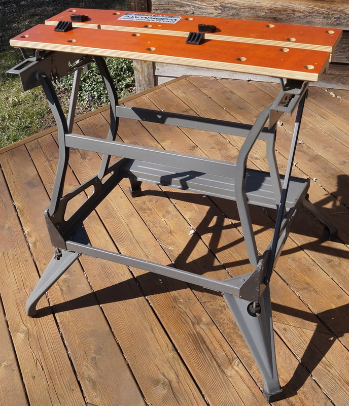

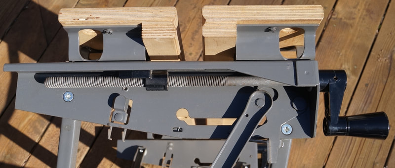

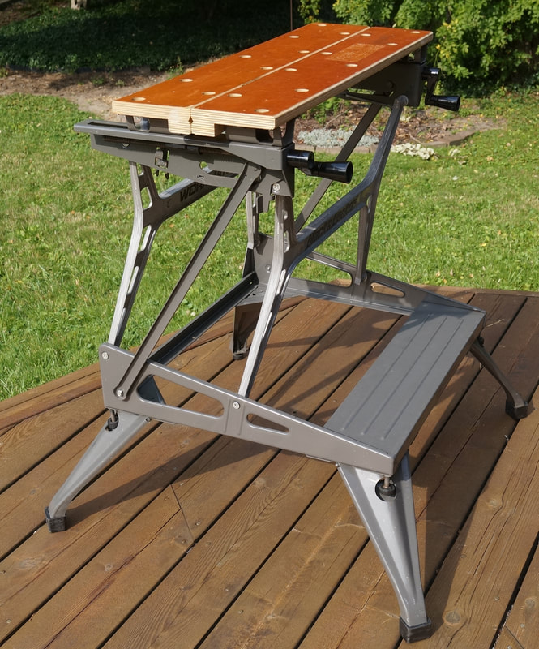


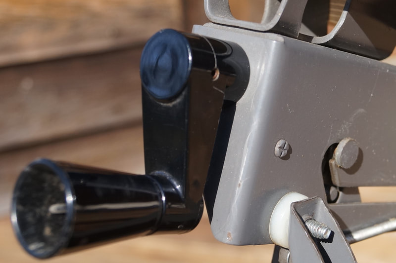


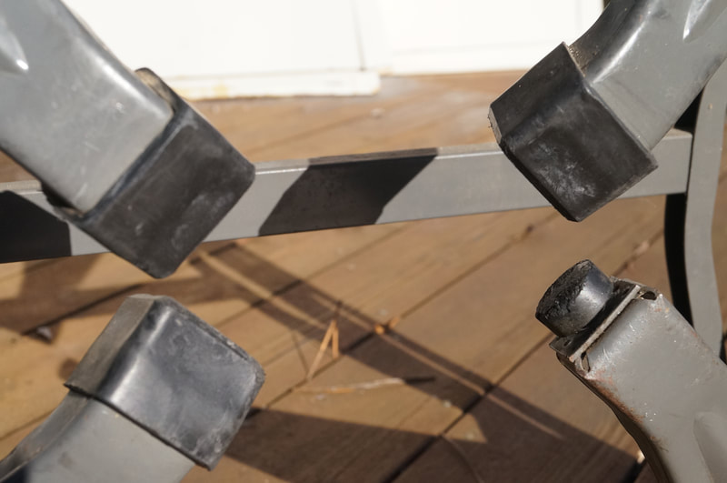


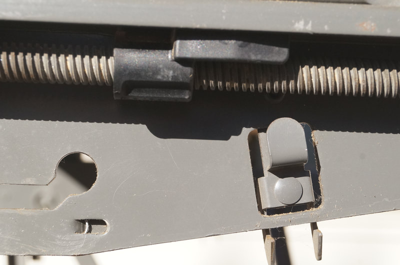


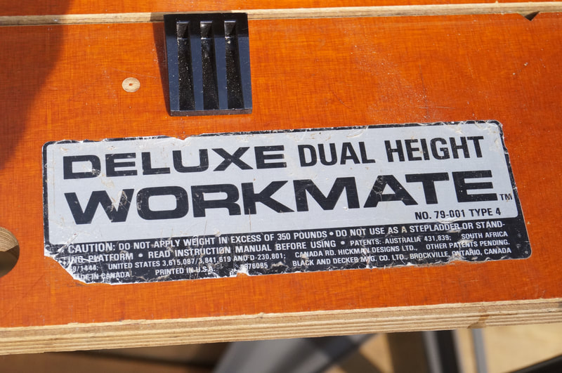

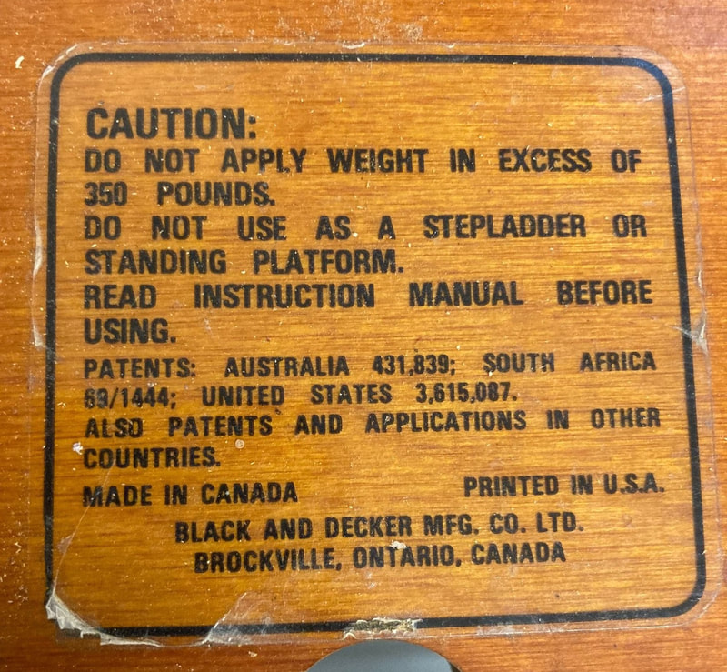


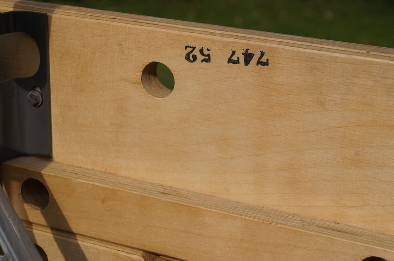

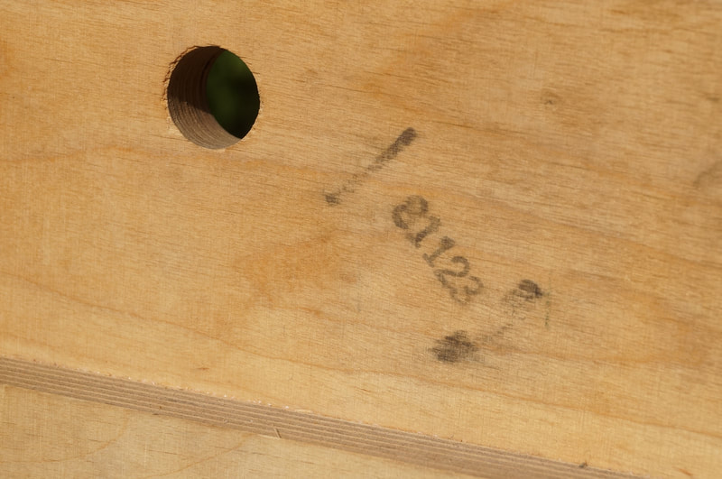

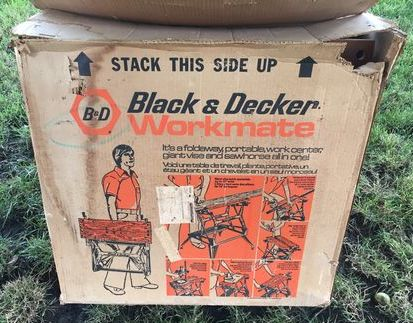


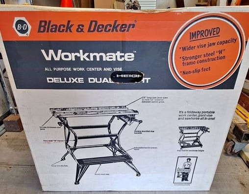